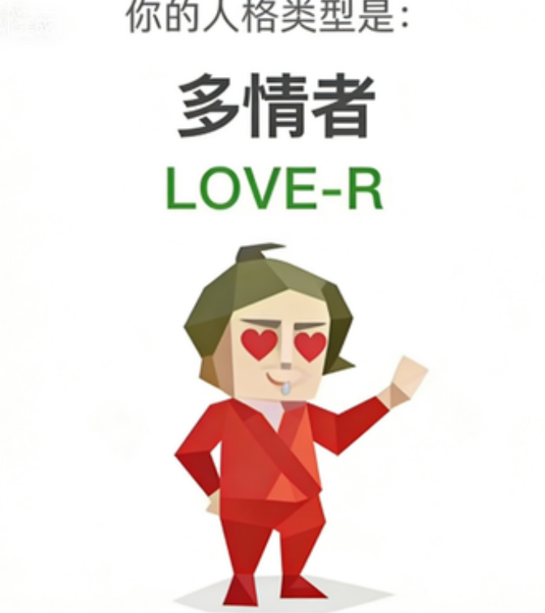

LOVE-R（多情者）
爱意太满，现实显得有点贫瘠。
LOVE-R人格像远古神话时代幸存至今的珍稀物种，其存在概率比你在马桶里钓到作者胳膊的概率还低。您简直是这个钢铁森林时代最后的、也是最不合时宜的吟游诗人。因为您的情感处理器不是二进制的，而是彩虹制的。一片落叶，在常人眼里只是"秋天来了"，在LOVE-R眼中，则是一场关于轮回、牺牲与无言之爱的十三幕悲喜剧。您内心世界像一座永不关门的主题公园，一生都在寻找那个能看懂园区地图、并愿意陪你坐旋转木马直到宇宙尽头的灵魂伴侣。

爱意太满，现实显得有点贫瘠。
LOVE-R人格像远古神话时代幸存至今的珍稀物种，其存在概率比你在马桶里钓到作者胳膊的概率还低。您简直是这个钢铁森林时代最后的、也是最不合时宜的吟游诗人。因为您的情感处理器不是二进制的，而是彩虹制的。一片落叶，在常人眼里只是"秋天来了"，在LOVE-R眼中，则是一场关于轮回、牺牲与无言之爱的十三幕悲喜剧。您内心世界像一座永不关门的主题公园，一生都在寻找那个能看懂园区地图、并愿意陪你坐旋转木马直到宇宙尽头的灵魂伴侣。
